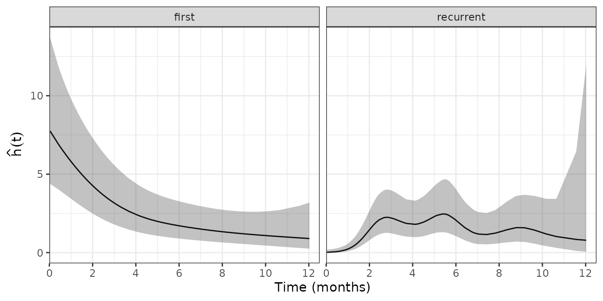
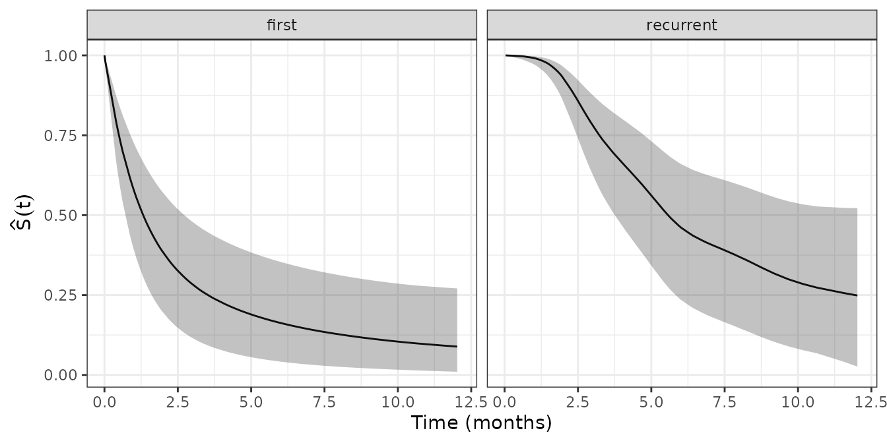

Recurrent Events
Jordache Ramjith, Andreas Bender, Kit C.B. Roes & Marianne A. Jonker
2025-03-20
Source:vignettes/recurrent-events.Rmd
recurrent-events.RmdIntroduction
We illustrate application of PAMMs in the analysis of the effect of
HIV exposure on the time to staphylococcus aureaus infection in
children, with possible recurrences. The children are anonymized and
random ids were generated. The following packages are used
in this analysis:
library(mgcv)
library(pammtools)
library(dplyr) #data wrangling
library(ggplot2) #visualization
theme_set(theme_bw())Time until staphylococcus aureaus infection in children
The data set (staph), is contained within the
pammtools package and includes 374
observations from 137 children (from the Drakenstein child health study)
with a maximum of 6 recurrences. The staph data is in
longitudinal format reflecting the recurrences for children over
different rows. Here
-
t.startandt.stopindicate the entry and exit time into the risk set for the respective recurrences -
eventindicates whether the -th recurrence was observed (1 = yes, 0 = censored for the -th recurrence) -
enumis the event number -
HIVexposureindicates whether the mother of the child was HIV positive (1 = yes, 0 = no)
## # A tibble: 6 × 6
## id t.start t.stop event enum hiv
## <fct> <dbl> <dbl> <dbl> <dbl> <dbl>
## 1 1 0 16 1 1 0
## 2 1 16 324 1 2 0
## 3 1 324 365 0 3 0
## 4 2 0 59 1 1 1
## 5 2 59 157 1 2 1
## 6 2 157 227 1 3 1The data for the first two children are
## # A tibble: 7 × 6
## id t.start t.stop event enum hiv
## <fct> <dbl> <dbl> <dbl> <dbl> <dbl>
## 1 1 0 16 1 1 0
## 2 1 16 324 1 2 0
## 3 1 324 365 0 3 0
## 4 2 0 59 1 1 1
## 5 2 59 157 1 2 1
## 6 2 157 227 1 3 1
## 7 2 227 368 0 4 1Transformation to PED format
In order to apply PAMMs to recurrent events, we first transform the
data to the piece-wise exponential data (PED) format (see here
for details). We use the as_ped() function in
pammtools. For the data transformation in
the recurrent events context, we first need to decide whether analysis
should be performed on the calendar- or gap-time scale. This is
controlled by the timescale argument (see below). For these
data, we use the gap-time.
The individual inputs for the data transformation are given as follows:
-
formula: specifies theSurvobject on the left hand side which contains information about the risk set entry and exit times as well as the event indicator; and the variables that should be retained in the data set after data transformation. Note that the variablesidandenumwill be retained in the data without specification. -
id: specifies the variable in the data set the indicates individual subjects -
data: the data to be transformed -
transition: the variable that indicates transitions from one state to another (here state transitions are transitions from event number to ) -
timescale: the time scale of the output data (defaults to gap time) -
max_time: The maximum time considered. All observations with will be set tomax_timeand their event indicator set to . Here we restrict the follow-up to366days, as it marks one year under observation and few children were under observation beyond that time. -
cut: This argument is unspecified here, but could be used to control the time points at which the follow-up is partitioned. If unspecified, all unique event times are used as cut points.
ped <- as_ped(
formula = Surv(t.start,t.stop,event) ~ hiv,
id = "id",
data = staph,
transition = "enum",
timescale = "gap",
max_time = 366)The resulting data for the first two infants is indicated below (we show the first and last observation of each infant for each event number they were at risk):
## # A tibble: 14 × 8
## # Groups: id, enum [7]
## id tstart tend interval offset ped_status hiv enum
## * <fct> <dbl> <dbl> <fct> <dbl> <dbl> <dbl> <dbl>
## 1 1 0 1 (0,1] 0 0 0 1
## 2 1 15 16 (15,16] 0 1 0 1
## 3 1 0 1 (0,1] 0 0 0 2
## 4 1 295 308 (295,308] 2.56 1 0 2
## 5 1 0 1 (0,1] 0 0 0 3
## 6 1 40 41 (40,41] 0 0 0 3
## 7 2 0 1 (0,1] 0 0 1 1
## 8 2 57 59 (57,59] 0.693 1 1 1
## 9 2 0 1 (0,1] 0 0 1 2
## 10 2 97 98 (97,98] 0 1 1 2
## 11 2 0 1 (0,1] 0 0 1 3
## 12 2 69 70 (69,70] 0 1 1 3
## 13 2 0 1 (0,1] 0 0 1 4
## 14 2 140 141 (140,141] 0 0 1 4Baseline model
Model specification
We first model the baseline hazards over time. Biologically, the
infection incidence in gap time may be different for the first event
compared with the recurrences. However, estimation of the baseline
hazard for each of the event numbers is not useful/feasible since only a
few subjects experienced 3 or more events. Therefore, we will create a
new variable to indicate whether the event a child is at risk for is the
first event or a recurrence. Note, however, that we do this after PED
data transformation and use the full information to create the PED data.
We only use enum_strata for stratification when estimating
the baseline hazard.
Using this data, we fit the following model
where
are Gaussian, child specific random effects that account for
child-specific frailty and
and
are the constant (intercept) and non-linear parts of the log-baseline
hazard of the
-th
event. Given the data transformation, this is equivalent to fitting a
stratified PAM (see here
for details), where stratification is done w.r.t. to
enum_strata.
Fitting the model
Details on the model specification in R
are given below. Note that we use the pamm function to fit
the model, which is a wrapper to mgcv::gam or
mgcv::bam, but direct modeling of the data using any
suitable package/function would also be possible. The other arguments
are passed to the respective fitting function.
In the formula argument,
-
s(tend, by = enum_strata)indicates the non-linear smooth functions, estimated via penalized splines (with thin-plate spline basis functions). By usingby=enum_stratainsides()and includingenum_strataas a fixed effect in the model, we are modeling stratified smooth functions (i.e., stratified baseline hazards) for first and recurrent events respectively, and -
s(id, bs = "re")indicates a random effect (frailty) for each child.
pamm0 <- pamm(
formula = ped_status ~ enum_strata + s(tend, by = enum_strata) + s(id, bs = "re"),
data = ped,
engine = "bam",
method = "fREML",
discrete = TRUE)As usual for mgcv objects, the
resulting model summary output shown below is separated into two parts,
one for the “parametric coefficients” and one for the “smooth terms”. In
case of smooth terms, the estimated degrees of freedom (edf) gives us an
idea of how “wiggly” the respective smooth functions are, and the
p-values test whether overall these are different from a flat line (Wood
2013). For the random effects terms, we report their
estimated variances (gam.vcomp) and p-values (summary
output). From the output, we see that the random effects are
statistically insignificant
.
summary(pamm0)##
## Family: poisson
## Link function: log
##
## Formula:
## ped_status ~ enum_strata + s(tend, by = enum_strata) + s(id,
## bs = "re")
##
## Parametric coefficients:
## Estimate Std. Error z value Pr(>|z|)
## (Intercept) -4.9287 0.1213 -40.62 < 2e-16 ***
## enum_stratarecurrent -1.0991 0.1857 -5.92 3.23e-09 ***
## ---
## Signif. codes: 0 '***' 0.001 '**' 0.01 '*' 0.05 '.' 0.1 ' ' 1
##
## Approximate significance of smooth terms:
## edf Ref.df Chi.sq p-value
## s(tend):enum_stratafirst 1.995 2.487 35.69 < 2e-16 ***
## s(tend):enum_stratarecurrent 6.101 7.240 33.49 3.7e-05 ***
## s(id) 14.052 136.000 15.17 0.249
## ---
## Signif. codes: 0 '***' 0.001 '**' 0.01 '*' 0.05 '.' 0.1 ' ' 1
##
## R-sq.(adj) = -0.0265 Deviance explained = -0.97%
## fREML = 18453 Scale est. = 1 n = 18889The standard deviation of the random effects is also relatively small
and can be extracted using the gam.vcomp command:
gam.vcomp(pamm0)##
## Standard deviations and 0.95 confidence intervals:
##
## std.dev lower upper
## s(tend):enum_stratafirst 0.0005741588 8.308116e-05 0.003967907
## s(tend):enum_stratarecurrent 0.0062687807 2.563565e-03 0.015329284
## s(id) 0.2565797067 4.015591e-02 1.639438617
##
## Rank: 3/3The results indicate that random effects are not required in this model. We therefore omit the random effects in the following.
##
## Family: poisson
## Link function: log
##
## Formula:
## ped_status ~ enum_strata + s(tend, by = enum_strata)
##
## Parametric coefficients:
## Estimate Std. Error z value Pr(>|z|)
## (Intercept) -5.0624 0.1231 -41.124 < 2e-16 ***
## enum_stratarecurrent -0.8860 0.1801 -4.919 8.71e-07 ***
## ---
## Signif. codes: 0 '***' 0.001 '**' 0.01 '*' 0.05 '.' 0.1 ' ' 1
##
## Approximate significance of smooth terms:
## edf Ref.df Chi.sq p-value
## s(tend):enum_stratafirst 2.099 2.616 41.71 < 2e-16 ***
## s(tend):enum_stratarecurrent 6.099 7.238 33.07 3.98e-05 ***
## ---
## Signif. codes: 0 '***' 0.001 '**' 0.01 '*' 0.05 '.' 0.1 ' ' 1
##
## R-sq.(adj) = -0.0276 Deviance explained = -2.34%
## fREML = 18453 Scale est. = 1 n = 18889Estimates over time and visualization
To obtain and visualize any quantity based on the fitted model, it is
easiest to create a suitable data set and calculate the quantity of
interest. pammtools provides the
respective convenience functions.
Below we illustrate the calculation and visualization of the baseline hazard over time, where we use
-
make_newdatato create a data set with one row for each unique event time used when fitting the model, stratified by event stratum.make_newdataconstructs a combination of the variables specified (here unique values oftendfor each value ofenum_strata, similar toexpand.grid, and sets all other variables to mean and modus values, if applicable). It is also aware of the specific PED structure. - use the
add_hazardfunction to augment the created data set with the predicted hazard and respective confidence intervals.
Once the data is created and augmented with the predicted hazard, we can use standard visualization function to create the graphics:
newdata <- ped %>%
make_newdata(
tend = unique(tend),
enum_strata = unique(enum_strata)) %>%
add_hazard(pamm0, type = "response")
ggplot(newdata, aes(x = tend/(365.25/12), y = hazard*365.25)) +
geom_line() +
geom_ribbon(aes(ymin = ci_lower*365.25, ymax = ci_upper*365.25), alpha = .3) +
ylab(expression(hat(h)(t))) + xlab("Time (months)") +
scale_x_continuous(limits = c(0, 12.5),breaks=seq(0,12,2),expand=c(0,0)) +
facet_wrap(~enum_strata)
We can see, that the hazard for the first event is high in the beginning and declines over time, as most children will have had the first infection after one year of life. Consequently, the hazard for recurrence is low in the beginning and increases over time before it flattens out after about two months.
Calculation of survival probabilities works equivalently, except that
we use the add_surv_prob function instead of
add_hazard. Note that calculating the survival probability
involves calculating a cumulative hazard. Thus, when there is a grouping
structure in the data (here the different strata), we have to group by
this variable before we calculate cumulative hazards or survival
probabilities. Note also, that we use geom_surv in order to
force the function to start at a survival probability of 1.
newdata <-newdata %>%
group_by(enum_strata) %>%
add_surv_prob(pamm0)
ggplot(newdata, aes(x = tend/(365.25/12), y = surv_prob)) +
geom_surv() +
geom_ribbon(aes(ymin = surv_lower, ymax = surv_upper), alpha = .3) +
ylab(expression(hat(S)(t))) + xlab("Time (months)") +
scale_x_continuous(limits = c(0, 12.1)) +
facet_wrap(~enum_strata)## Warning: Unknown or uninitialised column: `linewidth`.## Warning: Unknown or uninitialised column: `size`.
Modeling the effects of HIV assuming proportional hazards
The HIV exposure variable indicates whether children were HIV exposed and uninfected (HEU) by being born to HIV positive mothers or HIV uninfected (HU). We will fit this model in the PAMM framework to evaluate the effect of HIV exposure while assuming proportional hazards. This means that the effects of HIV shift the log-hazard by some constant over time. We fit two models. In the first model, we assume that the hazard ratio is the same for first and recurrent infections. In the second model, we allow different hazard ratios for first and recurrent infections, but we still assume both these hazard ratios are proportional over time.
Model 1
pam1 <- pamm(
formula = ped_status ~ enum_strata + s(tend, by = enum_strata) + hiv,
data = ped,
engine = "bam",
method = "fREML",
discrete = TRUE)
summary(pam1)##
## Family: poisson
## Link function: log
##
## Formula:
## ped_status ~ enum_strata + s(tend, by = enum_strata) + hiv
##
## Parametric coefficients:
## Estimate Std. Error z value Pr(>|z|)
## (Intercept) -5.1351 0.1303 -39.416 < 2e-16 ***
## enum_stratarecurrent -0.8779 0.1801 -4.874 1.09e-06 ***
## hiv 0.2681 0.1434 1.870 0.0615 .
## ---
## Signif. codes: 0 '***' 0.001 '**' 0.01 '*' 0.05 '.' 0.1 ' ' 1
##
## Approximate significance of smooth terms:
## edf Ref.df Chi.sq p-value
## s(tend):enum_stratafirst 2.121 2.643 41.78 < 2e-16 ***
## s(tend):enum_stratarecurrent 6.084 7.224 33.22 3.71e-05 ***
## ---
## Signif. codes: 0 '***' 0.001 '**' 0.01 '*' 0.05 '.' 0.1 ' ' 1
##
## R-sq.(adj) = -0.0279 Deviance explained = -2.18%
## fREML = 18453 Scale est. = 1 n = 18889We can see that estimated effect of HIV exposure in terms of the hazard ratio is .
Model 2
pam2 <- pamm(
formula = ped_status ~ enum_strata + s(tend, by = enum_strata) + hiv:enum_strata,
data = ped,
engine = "bam",
method = "fREML",
discrete = TRUE)
summary(pam2)##
## Family: poisson
## Link function: log
##
## Formula:
## ped_status ~ enum_strata + s(tend, by = enum_strata) + hiv:enum_strata
##
## Parametric coefficients:
## Estimate Std. Error z value Pr(>|z|)
## (Intercept) -5.05753 0.13330 -37.940 < 2e-16 ***
## enum_stratarecurrent -1.03583 0.19753 -5.244 1.57e-07 ***
## enum_stratafirst:hiv -0.02007 0.21300 -0.094 0.92493
## enum_stratarecurrent:hiv 0.54272 0.19553 2.776 0.00551 **
## ---
## Signif. codes: 0 '***' 0.001 '**' 0.01 '*' 0.05 '.' 0.1 ' ' 1
##
## Approximate significance of smooth terms:
## edf Ref.df Chi.sq p-value
## s(tend):enum_stratafirst 2.098 2.615 41.71 < 2e-16 ***
## s(tend):enum_stratarecurrent 6.067 7.208 33.42 3.24e-05 ***
## ---
## Signif. codes: 0 '***' 0.001 '**' 0.01 '*' 0.05 '.' 0.1 ' ' 1
##
## R-sq.(adj) = -0.0274 Deviance explained = -2.01%
## fREML = 18451 Scale est. = 1 n = 18889We can see that estimated effect of HIV exposure in terms of the hazard ratio is for the first infection and for recurrent infections.